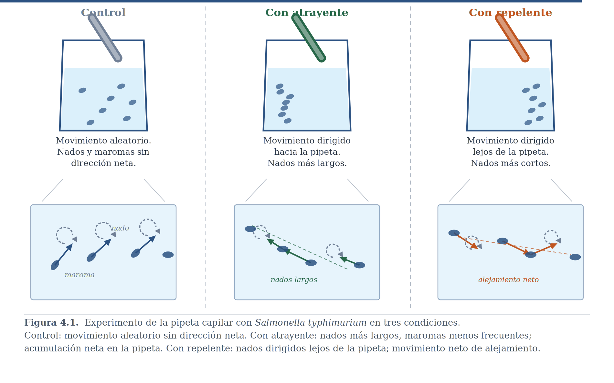
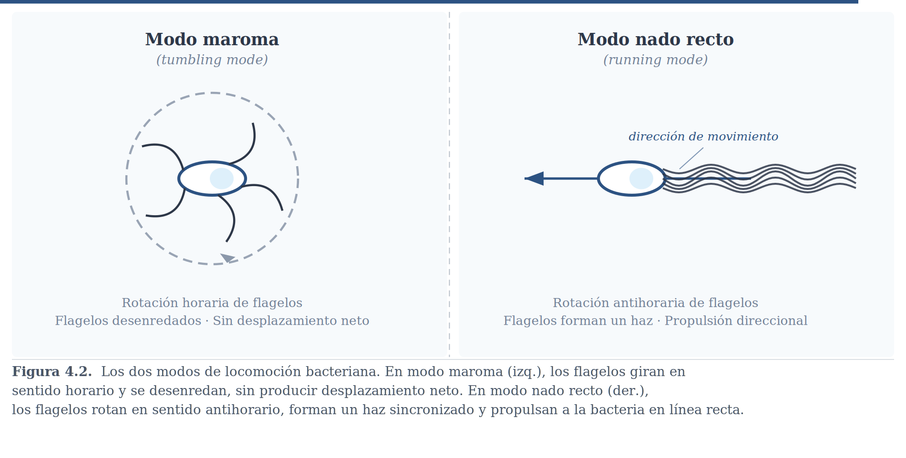
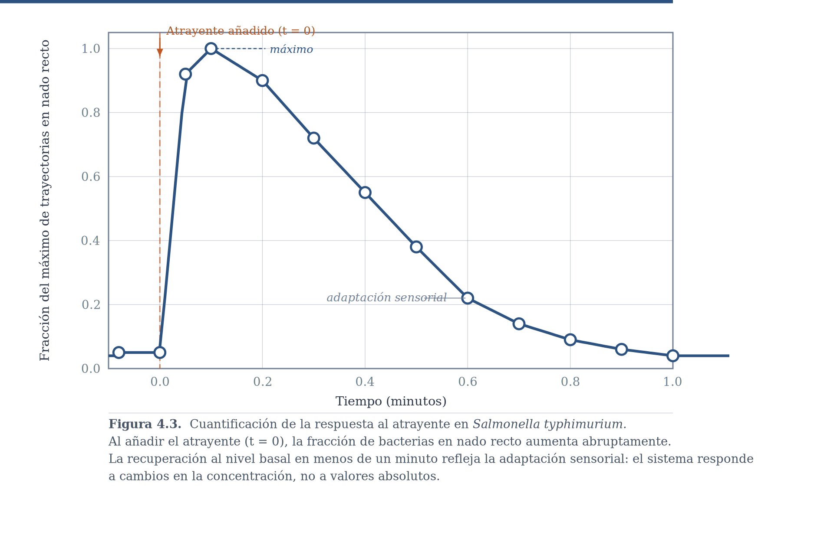

6 Ascenso de Colina
6.1 Un Mecanismo de Adaptación Sin Historia
En el capítulo anterior vimos cómo la selección natural opera a escala filogenética para producir comportamiento adaptado: soluciones codificadas genéticamente que funcionan bien en entornos relativamente predecibles. Pero la mayoría de los organismos enfrentan entornos que cambian en escalas de tiempo mucho más cortas que las generaciones, y deben ajustar su comportamiento durante su propia vida, a veces en segundos. ¿Qué ocurre cuando la variación es tan rápida que la selección natural no puede anticiparla, pero tampoco hay tiempo para aprender en el sentido pleno de la palabra?
Este capítulo introduce el primer mecanismo en nuestro cajón de herramientas: el ascenso de colina (hill climbing). Es un algoritmo elegantemente simple que permite a organismos muy básicos —incluso sin sistema nervioso— navegar eficientemente hacia recursos en entornos variables. Sus componentes esenciales reaparecerán, en formas más sofisticadas, cuando lleguemos al aprendizaje propiamente dicho.
6.2 El Problema Adaptativo
Considera el problema que enfrenta cualquier organismo que necesita encontrar alimento distribuido en el espacio —una bacteria en un medio acuoso, una plántula en el suelo del bosque, una ameba en busca de nutrientes. Hay una restricción que hace el problema particularmente difícil: muchos de estos organismos carecen de receptores de distancia, los órganos sensoriales que permiten detectar recursos remotamente, como la visión o el olfato en mamíferos. Sin receptores de distancia, el organismo no puede simplemente “ver” dónde está la comida y dirigirse hacia ella. Solo puede detectar si la concentración de nutrientes en su ubicación actual es mayor o menor que hace un momento. La información disponible es estrictamente local y temporal.
A esto se suma que la detección no es perfecta: fluctuaciones aleatorias pueden hacer que una zona parezca momentáneamente mejor o peor de lo que es. Y en entornos con múltiples fuentes de nutrientes, existe el riesgo de quedarse “atascado” en una fuente pequeña cercana, sin llegar a una fuente mayor más alejada —el problema clásico de los máximos locales.
Es el mismo desafío que enfrentas cuando buscas señal de wifi en un edificio desconocido: sin mapa, sin vista del router, guiándote solo por la barra de señal que sube o baja con cada paso.
6.3 El Comportamiento Observado
6.3.1 Plantas
Las plantas verdes enfrentan una competencia intensa por la luz solar. Una plántula germinando en el suelo del bosque debe crecer esquivando obstáculos —otras plantas, ramas, rocas— que bloquean su camino hacia la luz. Lo hace con tres comportamientos coordinados: el tallo rota, “barriendo” diferentes direcciones; al detectar mayor intensidad lumínica en alguna dirección, crece preferentemente hacia ese lado (fototropismo); y simultáneamente crece hacia arriba, alejándose del suelo. La combinación de estos tres comportamientos simples produce trayectorias sorprendentemente eficientes hacia la luz, incluso cuando ésta proviene de direcciones cambiantes o hay obstáculos en el camino.
6.3.2 La Salmonela
La bacteria Salmonella es notablemente exitosa localizando alimento. En un experimento clásico, se introduce una pipeta capilar con nutrientes en agua donde bacterias nadan libremente. Después de algunos minutos, hay significativamente más bacterias dentro de la pipeta que afuera —tanto cuando el tubo contiene un atrayente como cuando contiene un repelente, en cuyo caso el movimiento neto es de alejamiento. La Figure 6.1 muestra las tres condiciones experimentales y las trayectorias observadas.

La observación detallada del movimiento de salmonelas individuales revela dos comportamientos básicos que se alternan. El primero son las maromas (tumbling mode): la bacteria gira sobre sí misma sin desplazamiento neto —exploración, muestreo de diferentes direcciones posibles. El segundo es el nado en línea recta (running mode): la bacteria avanza en la dirección actual —explotación de una dirección prometedora. La Figure 6.2 muestra el mecanismo físico: en modo maroma, los flagelos rotan en sentido horario y se desenredan; en nado recto, rotan en sentido antihorario y forman un haz sincronizado que propulsa a la bacteria.

Lo crucial no son los dos comportamientos en sí, sino la regla que determina cuándo cambiar de uno a otro: si la concentración química está mejorando, continúa el nado recto; si deja de mejorar o empeora, pasa a maromas hasta que por casualidad apunte en una dirección donde la concentración vuelva a mejorar. Lo que controla la transición no son los valores absolutos de concentración, sino los cambios. La bacteria es sensible a si las cosas están mejorando o empeorando, no a cuán buenas son en un momento dado.
6.3.3 La Pregunta Crucial: ¿Simultánea o Sucesiva?
Esto nos lleva a una pregunta fundamental: ¿cómo “sabe” la bacteria si va en la dirección correcta? Hay dos posibilidades en principio. La primera es comparación simultánea: la bacteria podría tener receptores en diferentes partes de su cuerpo que comparan la concentración en distintos puntos del espacio al mismo tiempo, como un mamífero que compara las señales que llegan a sus dos fosas nasales. La segunda es comparación sucesiva: la bacteria compara la concentración en su posición actual con la concentración en su posición inmediatamente anterior.
La evidencia experimental descarta la primera posibilidad. El diámetro de una bacteria es tan pequeño que la diferencia de concentración entre sus dos extremos es prácticamente imperceptible —el gradiente espacial, a esa escala, no puede detectarse. Lo que sí puede detectarse son los cambios temporales en la concentración mientras la bacteria se mueve. Esto se confirma experimentalmente: las transiciones entre maromas y nado recto se producen ante cambios bruscos en la concentración, no ante valores absolutos. Como veremos a lo largo del curso, esta sensibilidad a cambios más que a valores absolutos es una característica ubicua de los sistemas sensoriales y de aprendizaje.
6.3.4 La Adaptación Sensorial
Hay una complicación adicional. Si la bacteria cambiara a nado recto ante el primer incremento detectado y se quedara así indefinidamente, probablemente terminaría en la primera mejora que encontró, no en la mejor ubicación posible. Las bacterias resuelven esto mediante adaptación sensorial: después de un tiempo breve —menos de un minuto en Salmonella— el sistema de detección “se acostumbra” al nivel actual de concentración. Lo que antes parecía “alta concentración” se convierte gradualmente en el nuevo punto de referencia “normal”. La bacteria vuelve a dar maromas hasta encontrar una concentración aún mayor.
La Figure 6.3 muestra esta dinámica cuantitativamente. Cuando se añade un atrayente en t = 0, la fracción de bacterias en nado recto aumenta abruptamente, reflejando el cambio brusco detectado. Pero en el transcurso de menos de un minuto esa fracción regresa a los valores basales, aun cuando el atrayente sigue presente: la adaptación sensorial ajustó el punto de referencia al nuevo nivel. El sistema vuelve a ser sensible a cambios adicionales.

La adaptación sensorial implementa una forma de insatisfacción adaptativa: el organismo nunca se contenta completamente con lo actual, sino que sigue buscando mientras haya tiempo y energía. Como veremos más adelante, esta misma lógica reaparece en mecanismos de aprendizaje mucho más complejos.
6.4 El Algoritmo
Imagina que subes el Ajusco con los ojos vendados. No puedes ver la cima ni el sendero. Lo único que puedes hacer es sentir si el suelo bajo tus pies va hacia arriba o hacia abajo. Si sube, sigues en esa dirección. Si empieza a bajar, te detienes y tanteas otras direcciones hasta encontrar una que vuelva a subir. Después de un tiempo —aunque la cuesta siga siendo empinada— el esfuerzo muscular se vuelve la nueva normalidad y ya no distingues si estás subiendo o no: vuelves a tantear. Eso es todo el algoritmo. La bacteria hace exactamente lo mismo, pero con concentración química en lugar de pendiente, y con flagelos en lugar de piernas.
El mecanismo necesita las mismas piezas en cualquier implementación: un sensor que detecta cambios en la variable relevante, una memoria brevísima del momento anterior, dos modos de movimiento contrastantes —explorar y explotar—, una regla para cambiar entre ellos, y la adaptación sensorial que equivale al momento en que dejas de sentir la pendiente y te obliga a buscar de nuevo. Con esas cinco piezas, el algoritmo está completo.
Existe además una variante ligeramente más sofisticada: en lugar de tomar la primera dirección que mejore, el organismo muestrea múltiples direcciones, registra el valor en cada una, y se mueve hacia la que mostró la mayor mejora. Es el ascenso de mayor pendiente —más costoso en memoria, pero más eficiente en entornos ruidosos donde un solo muestreo puede dar una impresión equivocada. El ejemplo de wifi lo ilustra bien: en la versión simple das un paso en una dirección y decides; en la versión de mayor pendiente te detienes, exploras varios pasos en distintas direcciones, memorizas los valores, y luego caminas decididamente hacia donde la señal fue mayor.
En ambos casos estás haciendo comparaciones sucesivas, igual que la bacteria: no puedes ver el router, solo puedes comparar si tienes más o menos señal que hace un momento. Esto distingue al ascenso de colina del mecanismo que veremos en el capítulo siguiente, donde la comparación es simultánea —dos puntos del espacio se comparan al mismo tiempo, no el mismo punto en dos momentos distintos.
¿Qué tan bueno es el algoritmo?
El algoritmo que describimos funciona, pero conviene preguntarse qué tan bien funciona y si puede hacerse mejor. Para eso, la competencia del Ajusco es útil más allá de ilustrar el mecanismo.
Imagina que ahora tienes información sobre la montaña: sabes que el Ajusco no es una colina perfectamente suave sino un terreno accidentado, con peñascos, cerros secundarios y mesetas que desde abajo parecen la cima. Tu compañero está vendado y usa el ascenso simple —da un paso, siente si subió o bajó, decide. Tú también estás vendado, pero usas el ascenso de mayor pendiente: antes de comprometerte con una dirección, tanteas varios pasos en distintas direcciones, memorizas los valores, y luego avanzas decididamente hacia donde la pendiente fue mayor. En una montaña suave, tu estrategia no te da ninguna ventaja y te cuesta tiempo extra. En una montaña con muchos cerros secundarios, tu estrategia reduce el riesgo de quedarte atascado en uno de ellos.
Pero hay algo que ambos hacen mal: el tamaño del paso. Lejos de la cima, cuando el terreno cambia rápidamente con cada movimiento, tiene sentido dar pasos grandes —la información de un paso pequeño es poco informativa respecto a si la dirección general es buena. Conforme te acercas a la cima, la pendiente se suaviza y la señal de cada paso se vuelve más pequeña y más ruidosa. En ese momento, un paso grande puede hacerte cruzar la cima sin notarlo. El paso óptimo no es constante: debe ir reduciéndose conforme se acerca al objetivo.
En la ecuación del mecanismo, el tamaño efectivo del paso está controlado por el parámetro b: cuánto peso le da el sistema a cada diferencia detectada. Un b grande actúa como un paso largo —sensible, rápido para reaccionar, pero propenso a sobrepasar el objetivo. Un b pequeño actúa como un paso corto —robusto ante el ruido, pero lento para reaccionar ante cambios reales. El valor óptimo de b no es fijo: depende de las características del terreno que está navegando el organismo.
Lo mismo aplica al parámetro a, que controla cuánto tiempo sigue el organismo en modo de explotación después de que la señal se estabiliza. En una montaña con pocos máximos locales, un a alto es bueno —el organismo explota con inercia y llega rápido a la cima. En una montaña con muchos cerros secundarios, un a alto es una trampa: el inercia del sistema lo mantiene escalando el primer cerro que encuentra aunque haya uno más alto a su izquierda. El valor óptimo de a también depende del terreno.
Esto no es un defecto del mecanismo sino una propiedad fundamental de cualquier algoritmo de búsqueda: no existe una estrategia universalmente óptima independiente del problema. Lo que existe son estrategias bien adaptadas a tipos particulares de entornos. Y si el entorno cambia, o si el organismo no sabe de antemano qué tipo de entorno enfrenta, el valor fijo de a y b con que parte puede ser bueno o puede ser desastroso.
La solución verdaderamente óptima al problema no es encontrar los mejores valores fijos de a y b, sino desarrollar la capacidad de ajustar esos valores conforme se acumula experiencia con el entorno. Un agente que empieza con pasos grandes cuando el terreno es desconocido y los va reduciendo sistemáticamente conforme aprende que está cerca de un óptimo —ese agente es mejor que cualquier agente con parámetros fijos, sin importar qué tan bien calibrados estén esos parámetros. Esa capacidad de ajustar adaptativamente la importancia del error es exactamente lo que veremos en los mecanismos de aprendizaje de los bloques siguientes.
Veremos esa capacidad —ajustar adaptativamente la importancia del cambio detectado— cuando lleguemos a los modelos de aprendizaje asociativo en el Bloque II.
6.5 Formalización Matemática
En el simulador que acaban de explorar, el parámetro a es exactamente el tiempo que el agente sigue explotando después de que la concentración dejó de mejorar. Con a cercano a 1, la inercia es grande —como un corredor que tarda en frenar. Con a cercano a 0, para casi de inmediato. El término b·[X(t+1) − X(t)] es la diferencia que ya calcularon en los ejercicios del simulador, multiplicada por qué tanto le importa al sistema esa diferencia.
Juntando las dos partes, la ecuación que rige todo lo que observaron es:
\[Y(t+1) = a \cdot Y(t) + b \cdot [X(t+1) - X(t)]\]
donde Y(t) es la variable de decisión que determina el modo conductual, X(t) es el valor de la variable ambiental (concentración química, intensidad lumínica, señal de wifi), a es el parámetro de adaptación sensorial (0 < a < 1), y b es el parámetro de sensibilidad al cambio (b > 0).
La regla de respuesta conecta Y con el comportamiento observable: si Y supera un umbral (típicamente cero), el organismo explota —nado recto, crecimiento hacia la luz, caminar en esa dirección; si Y está por debajo, explora —maromas, rotación, prueba otra dirección.
El marciano del capítulo anterior se preguntaba qué hace el vehículo. Aquí la pregunta es qué problema resuelve la bacteria —y esa pregunta nos dice por qué la ecuación tiene la forma que tiene. Si el problema es navegar sin mapa y sin receptores de distancia, necesitas comparación temporal, no espacial. Y necesitas adaptación que te impida conformarte con el primer gradiente positivo que encuentres. Todo lo demás se sigue de ahí.
6.5.1 Un Ejemplo Numérico
Sigamos la dinámica con valores concretos: a = 0.9, b = 0.5, umbral = 0. Partimos de Y(0) = 0 y X(0) = 5. El agente está en modo exploración.
Tiempo 1: X(1) = 7 — la concentración mejora. Y(1) = 0.9 × 0 + 0.5 × (7 − 5) = 0 + 1.0 = 1.0 → Explotar.
Tiempo 2: X(2) = 9 — sigue mejorando. Y(2) = 0.9 × 1.0 + 0.5 × (9 − 7) = 0.9 + 1.0 = 1.9 → Explotar.
Tiempo 3: X(3) = 9 — la concentración se estabiliza. Y(3) = 0.9 × 1.9 + 0.5 × (9 − 9) = 1.71 + 0 = 1.71 → Explotar (Y empieza a decaer).
Tiempo 4: X(4) = 8 — baja ligeramente. Y(4) = 0.9 × 1.71 + 0.5 × (8 − 9) = 1.54 − 0.5 = 1.04 → Explotar.
Tiempo 5: X(5) = 7 — sigue bajando. Y(5) = 0.9 × 1.04 + 0.5 × (7 − 8) = 0.94 − 0.5 = 0.44 → Explotar (Y casi en umbral).
Tiempo 6: X(6) = 6 — sigue empeorando. Y(6) = 0.9 × 0.44 + 0.5 × (6 − 7) = 0.40 − 0.5 = −0.10 → Explorar.
La secuencia muestra algo importante: el sistema no cambia a exploración en el instante en que la concentración deja de mejorar. La inercia del término a·Y mantiene la explotación durante un tiempo —un filtro que evita responder a fluctuaciones momentáneas. Pero si la concentración no mejora de forma sostenida, Y cae por debajo del umbral y el organismo vuelve a buscar. Esto corresponde exactamente a lo que muestra la figura 4.3: la bacteria mantiene el nado recto por un tiempo incluso cuando la concentración se estabiliza, antes de que la adaptación sensorial la devuelva al modo exploración.
Para explorar los conceptos de este capítulo en la práctica, abre el siguiente simulador:
Verás un agente navegando un paisaje de concentración con dos fuentes: una fuente principal (la meta) y un máximo local (la trampa). Parámetros: a, b, nivel de ruido. La trayectoria se colorea por modo: exploración en azul, explotación en naranja. Gráficas en tiempo real de Y(t) y X(t).
Objetivo: Descubrir qué combinación de adaptación sensorial y sensibilidad al cambio produce navegación eficiente, y por qué ninguno de los extremos funciona bien.
Básico: Comienza con a = 0.9 y b = 0.5. Antes de iniciar la simulación, predice: ¿crees que el agente llegará a la fuente principal o quedará atrapado en el máximo local? Corre la simulación y verifica. Ahora reduce a a 0.3 manteniendo b constante. ¿Qué cambia?
Intermedio: Con a = 0.97 (adaptación muy lenta), ¿el agente escapa del máximo local? Prueba a = 0.5. ¿Por qué la adaptación sensorial ayuda a escapar de los máximos locales? Piensa en términos del Ajusco: si nunca dejas de sentir la pendiente actual, ¿qué te impide buscar una pendiente mayor?
Avanzado: Activa el ruido ambiental. Encuentra la combinación de a y b que produce la navegación más eficiente con ruido alto. ¿Por qué algunos valores de b que funcionaban sin ruido ya no funcionan? ¿Qué hace que el ruido sea un problema para la sensibilidad al cambio?
6.6 Lo que el Ascenso de Colina Hace y No Hace
El ascenso de colina permite adaptación en tiempo real y navegación eficiente hacia gradientes sin mapa ni receptores de distancia. El balance exploración-explotación emerge automáticamente de la dinámica del sistema, y la inercia del término a·Y actúa como filtro ante el ruido.
Lo que el mecanismo no hace es igualmente revelador. En este modelo la comparación es entre el valor actual y el valor inmediatamente anterior: no hay integración de experiencias pasadas. Si repetimos la misma situación mañana, el organismo responde igual que hoy —no hay memoria de largo plazo. El mecanismo es puramente reactivo: responde a cambios que ya ocurrieron, no anticipa cambios futuros. No hay modelo interno del entorno ni representación de dónde están las fuentes. Y no hay aprendizaje en el sentido estricto: una bacteria que navegó exitosamente ayer no navega mejor hoy por haber tenido esa experiencia.
Esta distinción es central para el libro. El comportamiento adaptativo sin aprendizaje —como el ascenso de colina— produce flexibilidad conductual en respuesta al entorno actual, pero sin retener información de experiencias previas. El comportamiento adaptable —que estudiaremos en los bloques siguientes— supone exactamente eso: un cambio duradero en el sistema como resultado de la experiencia. El ascenso de colina es un mecanismo sin historia. Su importancia pedagógica está en que los mismos principios —comparación, reducción de error, balance exploración-explotación— reaparecerán, transformados y enriquecidos, en los mecanismos de aprendizaje que estudiaremos más adelante.
6.7 Conexiones
6.7.1 Hacia atrás: Selección Natural
El ascenso de colina es una instancia de ensayo y error análoga, en su lógica, a la selección natural: la exploración aleatoria genera variación conductual; la comparación determina qué variantes se explotan; la explotación continúa mientras el gradiente es favorable. La diferencia crucial es la escala temporal. La selección natural opera en generaciones; el ascenso de colina opera en segundos o minutos en la vida del individuo. Son el mismo principio en escalas de tiempo radicalmente distintas.
6.7.2 Hacia adelante: Aprendizaje por Refuerzo
La diferencia [X(t+1) − X(t)] es una primera versión del error de predicción: la discrepancia entre lo que se esperaba y lo que ocurrió. La actualización incremental de Y es análoga a cómo el valor asociativo se ajusta ensayo a ensayo en los modelos del Bloque II. Y el dilema exploración-explotación, que aquí aparece en su forma más simple, se convertirá en uno de los problemas centrales del aprendizaje por refuerzo en el Bloque IV.
6.7.3 Lateral: Sistemas de Retroalimentación (Próximo Capítulo)
El ascenso de colina utiliza comparación sucesiva: el mismo lugar en dos momentos distintos. El próximo capítulo introduce los sistemas de retroalimentación, que utilizan comparación simultánea: dos puntos del espacio se comparan al mismo tiempo. Ambos son mecanismos de adaptación sin aprendizaje, pero la diferencia en el tipo de comparación tiene consecuencias importantes para qué problemas puede resolver cada uno —y la distinción entre los dos es exactamente lo que la evidencia experimental descartó en la Salmonella.
7 Resumen
El problema adaptativo de este capítulo es localizar recursos en entornos variables sin receptores de distancia ni mapa previo. La solución es el ascenso de colina: un algoritmo de comparación sucesiva que alterna entre exploración aleatoria y explotación direccional, guiado por cambios en una variable ambiental de interés. Sus piezas esenciales son: un sensor de cambios, una memoria mínima del momento anterior, dos modos conductuales contrastantes, una regla de transición entre ellos, y adaptación sensorial que previene el estancamiento en máximos locales.
Lo que el mecanismo no hace es tan importante como lo que hace: no hay integración de historia, ni predicción, ni representación del entorno, ni cambio duradero. Es comportamiento adaptativo sin aprendizaje. Su relevancia pedagógica está en que los mismos principios —comparación, reducción de error, balance exploración-explotación— reaparecerán, transformados y enriquecidos, en los mecanismos de aprendizaje de los bloques siguientes.
7.1 Ejercicios de Comprensión
1. La figura 4.3 muestra que después de añadir un atrayente, la fracción de bacterias en nado recto aumenta abruptamente y luego regresa a los valores basales en menos de un minuto. Explica este patrón en términos del parámetro a de la ecuación. ¿Qué valor de a produciría una recuperación más rápida? ¿Qué pasaría si a = 1 exactamente?
2. El capítulo descarta la posibilidad de comparación simultánea en Salmonella con un argumento basado en el tamaño de la bacteria. Formula ese argumento con tus propias palabras. ¿Puedes pensar en algún organismo que sí pudiera usar comparación simultánea para detectar un gradiente químico?
3. Imagina que buscas señal de wifi en un edificio desconocido. Describe, paso a paso, cómo aplicarías el ascenso de mayor pendiente. ¿En qué situaciones preferirías el ascenso simple? ¿Cuándo valdría la pena el esfuerzo adicional?
4. Usando la ecuación Y(t+1) = a·Y(t) + b·[X(t+1) − X(t)], con a = 0.8 y b = 1.0, completa la tabla. El umbral para explotar es 0.
| t | X(t) | Y(t) | ¿Explorar o explotar? |
|---|---|---|---|
| 0 | 10 | 0 | — |
| 1 | 12 | ? | ? |
| 2 | 14 | ? | ? |
| 3 | 14 | ? | ? |
| 4 | 13 | ? | ? |
¿En qué momento el sistema cambia de modo? ¿Qué dice eso sobre la relación entre estabilización de concentración y exploración?
5. El capítulo afirma que el ascenso de colina no es aprendizaje. ¿Qué le falta para serlo? Formula una modificación hipotética al mecanismo que lo convertiría en algo más parecido al aprendizaje. ¿Qué nueva capacidad adaptativa tendría el organismo con esa modificación?
6. (Reflexión) La adaptación sensorial implementa una forma de “insatisfacción adaptativa”. ¿Por qué sería desadaptativo un organismo que no tuviera esta propiedad —que se contentara para siempre con el primer gradiente positivo que encontrara? ¿Puedes pensar en algún contexto donde esa estrategia podría ser ventajosa?